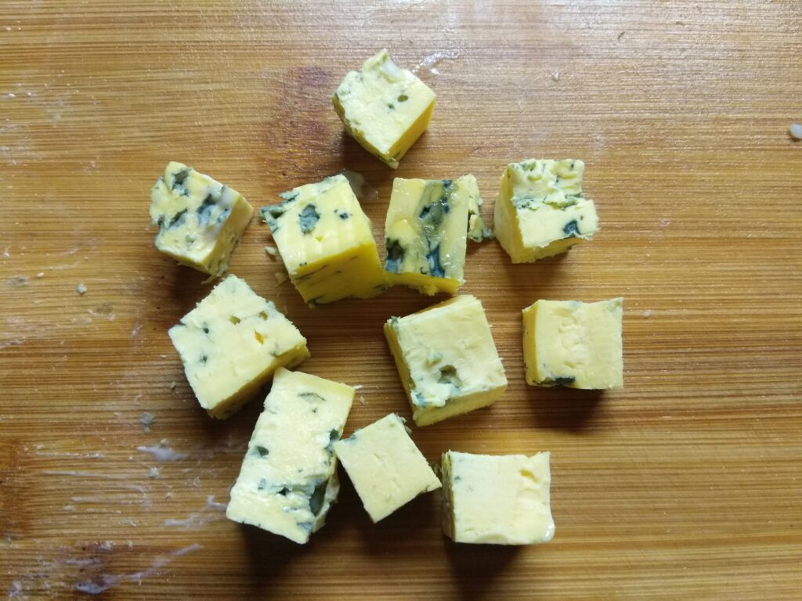
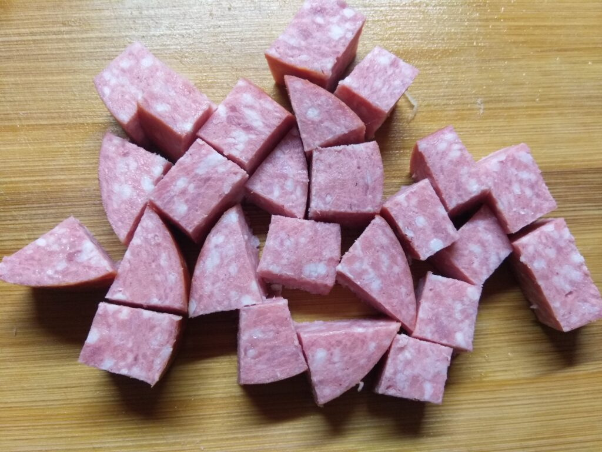
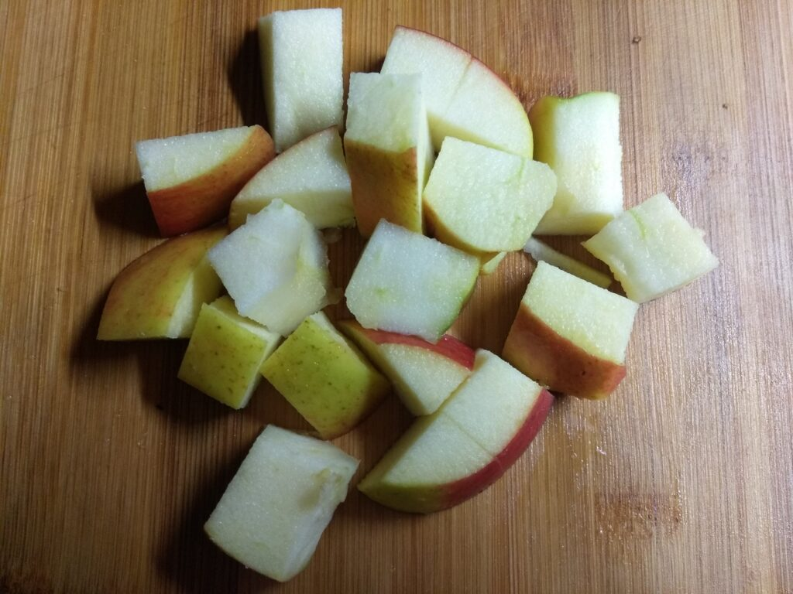
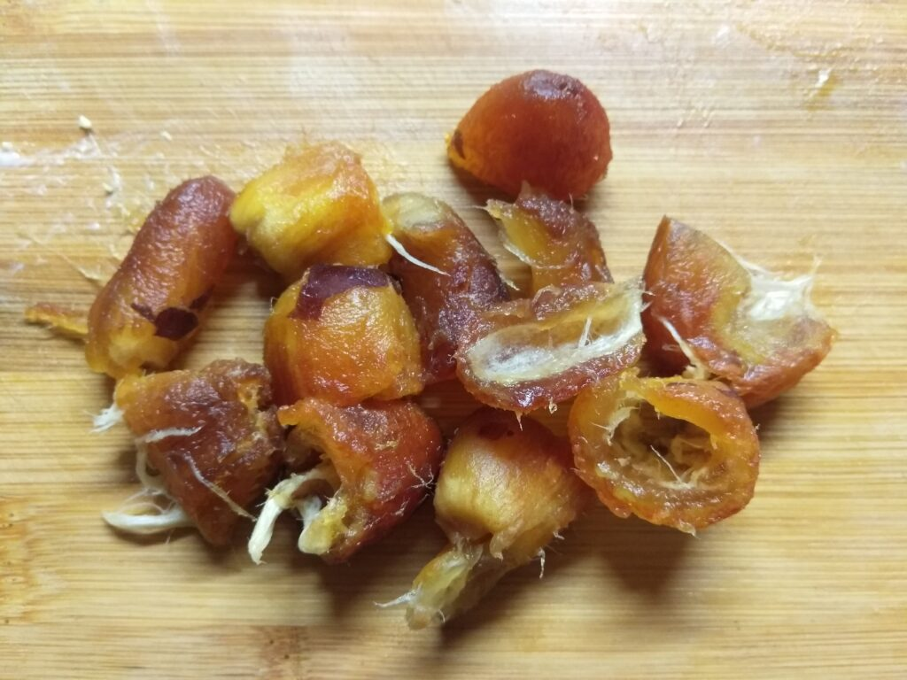
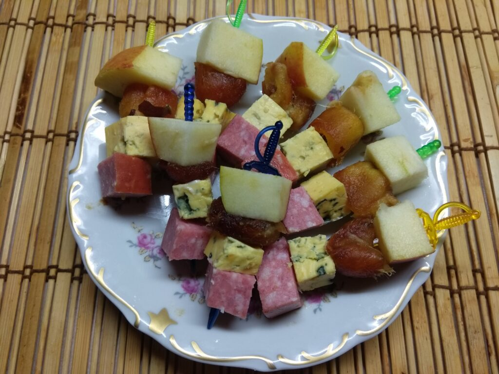

Закуски
Эффектная и очень вкусная закуска на шпажках – из голубого сыра, яблок, салями и фиников. Настоящая симфония соленого, сладкого и пикантного. Такая закуска – отличный вариант для легкого фуршета под бокал вина или шампанского
Приготовление:
1.Сыр с плесенью нарезать кубиками.
2. Салями нарезать кубиками. Старайтесь, чтобы кубики у всех ингредиентов были одинаковые
3. Яблоко помыть, удалить семена и нарезать кубиками.
4. Из фиников удалить косточку, если финик крупные, то разрезать пополам.
5. Насадить на шпажку ингредиенты, каждого по одной штучке.
